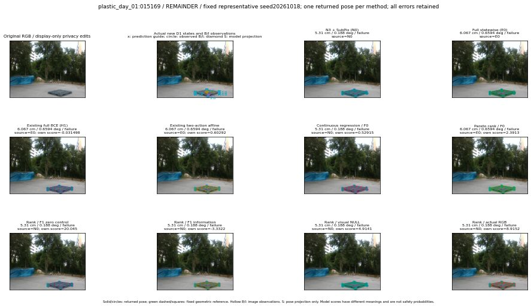

실선은 반환 자세, 초록 점선은 고정 기하 참조입니다. S는 영상 관측이 아닙니다. 점수는 모델별 의미가 다르며 보정된 안전 확률이 아닙니다. 개인정보 처리는 표시 사본에만 적용했습니다.
| 방법·seed | 위치 / 회전 / 공동성공 | 실제 출처 | 선택 후보 | 각 모델 자체 점수 |
|---|---|---|---|---|
| N0 | 5.31 cm / 0.188 deg / failure | N0 | N/A | N/A |
| E0 | 6.067 cm / 0.6594 deg / failure | E0 | N/A | N/A |
| E0_REGENERATED | 6.067 cm / 0.6594 deg / failure | E0 | E0_REGENERATED | N/A |
| POSEFIX_SUBPIX_PF_ANCHOR | 5.173 cm / 0.3942 deg / failure | OTHER | N/A | N/A |
| POSEFIX_SUBPIX_YOLO_ANCHOR | 5.173 cm / 0.3942 deg / failure | OTHER | N/A | N/A |
| D1_H1_MLP_s20261018 | 6.067 cm / 0.6594 deg / failure | E0 | E0_REGENERATED | -0.03149756044149399 |
| D1_H1_MLP_s20261019 | 6.067 cm / 0.6594 deg / failure | E0 | E0_REGENERATED | -0.11289636790752411 |
| D1_H1_MLP_s20261020 | 6.067 cm / 0.6594 deg / failure | E0 | E0_REGENERATED | -0.12015044689178467 |
| D1_H1_PAIR_MLP_s20261018 | 6.067 cm / 0.6594 deg / failure | E0 | E0_REGENERATED | 0.12229394912719727 |
| D1_H1_PAIR_MLP_s20261019 | 5.31 cm / 0.188 deg / failure | N0 | N0 | 0.14701807498931885 |
| D1_H1_PAIR_MLP_s20261020 | 5.31 cm / 0.188 deg / failure | N0 | N0 | 0.5587964057922363 |
| D1_H1_PAIR_ROLE_AFFINE_s20261018 | 6.067 cm / 0.6594 deg / failure | E0 | E0_REGENERATED | 0.6029210686683655 |
| D1_H1_PAIR_ROLE_AFFINE_s20261019 | 6.067 cm / 0.6594 deg / failure | E0 | E0_REGENERATED | 0.642124593257904 |
| D1_H1_PAIR_ROLE_AFFINE_s20261020 | 6.067 cm / 0.6594 deg / failure | E0 | E0_REGENERATED | 0.6010004281997681 |
| R_CONT_F0_s20261018 | 5.31 cm / 0.188 deg / failure | N0 | N0 | 0.529147744178772 |
| R_CONT_F0_s20261019 | 5.31 cm / 0.188 deg / failure | N0 | N0 | 0.7465408444404602 |
| R_CONT_F0_s20261020 | 6.067 cm / 0.6594 deg / failure | E0 | E0_REGENERATED | 0.7222900986671448 |
| R_ORDER_F0_s20261018 | 6.067 cm / 0.6594 deg / failure | E0 | E0_REGENERATED | 2.391326904296875 |
| R_ORDER_F0_s20261019 | 5.31 cm / 0.188 deg / failure | N0 | N0 | 12.878290176391602 |
| R_ORDER_F0_s20261020 | 6.067 cm / 0.6594 deg / failure | E0 | E0_REGENERATED | 6.036906719207764 |
| R_ORDER_F1_ZERO_s20261018 | 5.31 cm / 0.188 deg / failure | N0 | N0 | 20.04464340209961 |
| R_ORDER_F1_ZERO_s20261019 | 6.067 cm / 0.6594 deg / failure | E0 | E0_REGENERATED | 22.229564666748047 |
| R_ORDER_F1_ZERO_s20261020 | 5.31 cm / 0.188 deg / failure | N0 | N0 | 14.203089714050293 |
| R_ORDER_F1_s20261018 | 5.31 cm / 0.188 deg / failure | N0 | N0 | -3.3321533203125 |
| R_ORDER_F1_s20261019 | 5.31 cm / 0.188 deg / failure | N0 | N0 | 7.1650309562683105 |
| R_ORDER_F1_s20261020 | 5.31 cm / 0.188 deg / failure | N0 | N0 | 6.939258098602295 |
| V_ORDER_NULL_s20261018 | 5.31 cm / 0.188 deg / failure | N0 | N0 | 4.914098739624023 |
| V_ORDER_NULL_s20261019 | 5.31 cm / 0.188 deg / failure | N0 | N0 | 3.419947624206543 |
| V_ORDER_NULL_s20261020 | 5.31 cm / 0.188 deg / failure | N0 | N0 | 8.367971420288086 |
| V_ORDER_RGB_s20261018 | 5.31 cm / 0.188 deg / failure | N0 | N0 | 8.915246963500977 |
| V_ORDER_RGB_s20261019 | 5.31 cm / 0.188 deg / failure | N0 | N0 | 3.675302743911743 |
| V_ORDER_RGB_s20261020 | 5.31 cm / 0.188 deg / failure | N0 | N0 | 0.17699381709098816 |